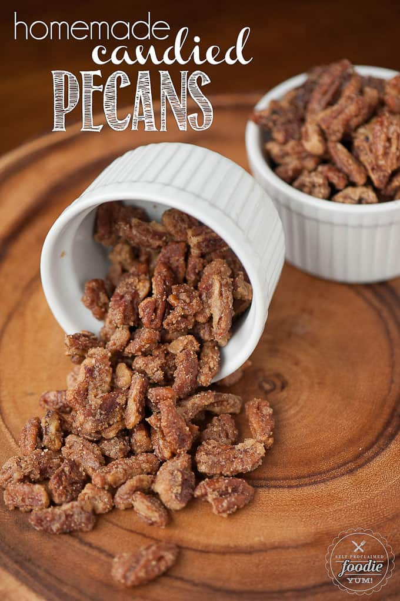

Candied Pecans

Homemade Candied Pecans are a quick, easy and delicious recipe.
These oven baked brown sugar spiced pecans are a real treat, easy to make, and are perfect as a holiday appetizer, snack on the go, or on top of salads, oatmeal,
or yogurt.
Ingredients
- 4 Tbsp unsalted butter
- 1 large egg white
- 1/4 cup granulated sugar
- 1/4 cup brown sugar
- 1 tsp vanilla extract
- 1 tsp ground cinnamon
- 8 oz raw pecan halves
- flaked sea salt
Instructions
- Preheat the oven to 350°F if using a baking stone, otherwise preheat the oven to 300°F if using a metal baking sheet. If
using a metal baking sheet, you can line with foil or parchment paper for easy clean up, if desired. Pour the butter
onto the baking stone or baking sheet.
- In a large bowl, whisk together the egg whites, granulated sugar, brown sugar, vanilla and cinnamon. Add the pecans and
toss until they are fully coated. Spread the coated pecans onto the baking sheet in a single layer.
- Bake in preheated for up to 30 minutes, stirring the pecans every 5 minutes and checking on them to ensure they don't
over cook. I let mine cook the full 30 minutes because they are much less likely to burn on a baking stone compared to a
metal baking sheet. Keep in mind that oven temperatures vary and yours may be done MUCH sooner. Trust your nose. If
using sea salt, sprinkle small amounts on the hot nuts before they cool.
- Cool on the baking sheet for 10 to 15 minutes and be sure to stir a couple times as they cool so they don't stick
together. Store in airtight container once they are fully cooled.